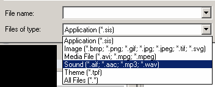
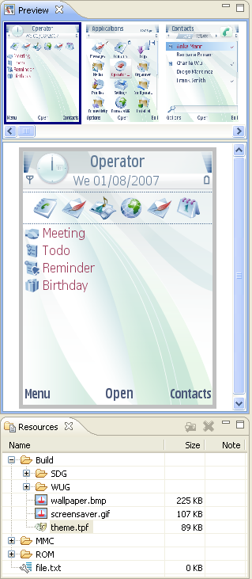
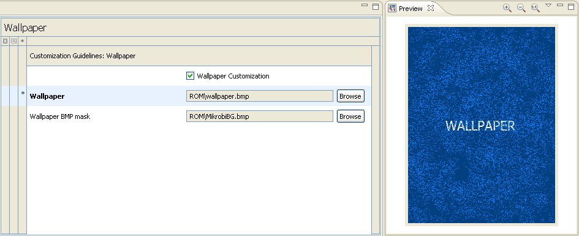

Working with Resources in Variant Proposals
A resource is an asset such as picture, sound, animation, video or theme included in the variant proposal.
Importing Resources
Situation: You want to add a new resource file (asset like picture or sound) that does not exist in the CPF yet.
- In the Resource Library select the target folder and click Import or click right mouse button and select Import Resource(s) in the context menu.
- Browse to the location of the resource file that you want to add.
- Select the file and click Open to add it to the Resource Library.
- The other way is to use drag&drop functionality. Drag the image/video/sound file from the source folder and drop it directly to Resources Library. You can also remove resources from CPF by dragging them e.g. onto your desktop.
The file is added into selected folder. You can now preview the new resource file and use it in the settings. Here are the supported resource file types:

Exporting Resources
Situation: You want to move or copy resource file from CPF to operating system drive.
- In the Resource Library choose resource file, which will be moved.
- Using drag&drop operation you can move file to destination folder, for example the Desktop folder. While file is dragged you can see windows cursor for move operation .
-
Also, you can change move operation to copy operation using Ctrl key while resource file is dragged. The cursor will change to copy operation cursor
 .
.
Removing Resources
Situation: There is a resource file (asset like picture or sound) in the Resource Library that you do not need in the variant software proposal form.
- Select the resource file that you want to remove from the Resource Library.
-
Click Remove
 or click right mouse button and select Remove Resource(s) in the context menu..
or click right mouse button and select Remove Resource(s) in the context menu..
Carbide.v removes the selected resource from the CPF.
Previewing Resources
Situation: You want to check that a resource file (asset like picture or sound) is correct.
- Select the resource file that you want to see or hear.
-
Carbide.v shows the resource in the preview pane. If it is
- a picture, Carbide.v displays it.
- a sound file, Carbide.v displays the sound play controls with which you can listen to the sound.
- an animation, Carbide.v displays the animation play controls.
- a theme, Carbide.v launches the theme preview controls with screen thumbnails. Expand the preview pane for smooth theme navigation screen by screen.
- not previewable in Carbide.v (yet), Carbide.v notifies that. Double-click the file to preview it in an external application to which the file type is associated on your PC.
You can preview or listen to the resource with appropriate controls. You can also see the metadata details of the resource whenever available. For example, themes are previewed as follows:

Associating Resources with Settings
Situation: you want to add a resource (asset like picture or sound) as a value in a setting. You may use the below steps or the file browse dialogue.
- Open the part of the software proposal form that includes the setting to which you want to add a resource as value.
- Find and select the resource in the Resource Library.
- Drag and drop the resource to the setting field.
Carbide.v shows the resource as the value of the setting.
Carbide.v shows the resource as the value of the setting. Carbide.v shows the resource in the preview pane. If it is
- a picture, Carbide.v displays it.
- a sound file, Carbide.v displays the sound play controls with which you can listen to the sound.
- an animation, Carbide.v displays the animation play controls.
- a theme, Carbide.v launches the theme preview controls with screen thumbnails. Expand the preview pane for smooth theme navigation screen by screen.
- not previewable in Carbide.v (yet), Carbide.v notifies that. Double-click the file to preview it in an external application to which the file type is associated on your PC.
You can preview or listen to the resource with appropriate controls. You can also see the metadata details of the resource whenever available. For example, images are previewed as follows:
